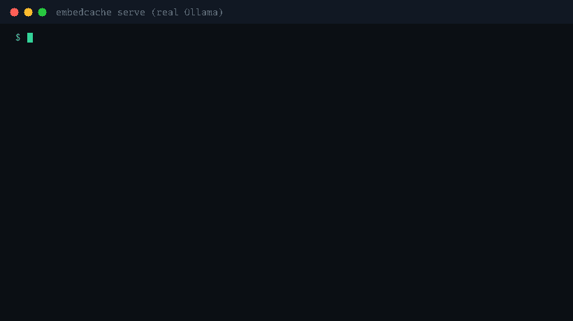
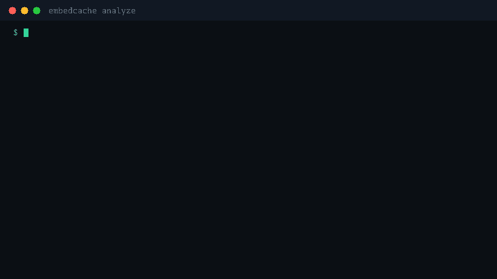
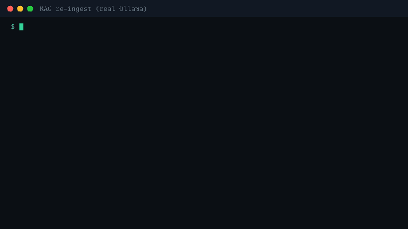
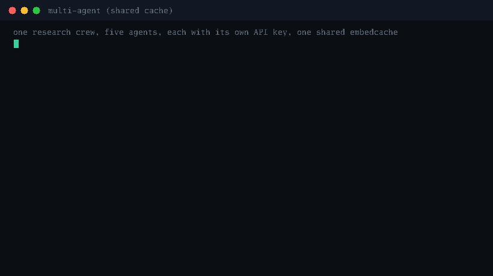

embedcache is a single-binary proxy that sits in front of any OpenAI-compatible embedding API (Ollama, vLLM, TEI, OpenAI, Gemini), remembers every answer, and only forwards what it has never seen. Then it hands you the invoice for what it saved.
go install github.com/Ajay6601/embedcache/cmd/embedcache@latest
click to copy

Point the offline analyzer at the request logs you already have. It fingerprints every input and tells you exactly how much of your embedding spend was duplicates. No proxy in the request path, no risk, just the number.

Three moves, all before your GPU or API bill gets touched.
Every input item is content-addressed: model + dimensions + encoding + text hashed into a key. Byte-exact by default; opt-in normalization if you want it.
Known items replay the upstream's exact bytes. Items being computed right now by another request wait for that result. Only the truly new remainder goes upstream, even inside mixed batches.
Every hit, miss, token, and dollar is tracked per model and per API key: live waste report, JSON stats, Prometheus metrics.
Both clips below were captured from live runs against real Ollama. The numbers on screen are what the proxy actually returned, not a script.


Cache hits return the identical bytes the upstream produced, with no float re-encoding or precision drift. Mixed cached/uncached batches keep perfect index mapping (the bug class other gateways get wrong).
200 concurrent requests for the same input trigger exactly one upstream computation. Works across overlapping batches, per item.
Allowlist or upstream-verified API keys: a revoked key can't read cached vectors. Admin endpoints behind a bearer token.
Retries with backoff, then a circuit breaker fails fast. Cache hits keep serving while your backend is down: an outage degrades misses, not the service.
Snapshot persistence: 52,500 entries hard-crashed and restored byte-exact in the validation run. On-demand snapshots via the admin API.
Exact-match only, on purpose: a 0% wrong-answer rate by construction. Similarity-threshold caching returns wrong vectors at some rate; we don't.
Nightly re-ingestion re-embeds corpora that barely changed. Measured live: re-fetching 103 real Wikipedia articles an hour later was 100% absorbed: a real pipeline would have paid for all 8,601 chunks again.
Agent loops re-embed queries, expansions, and tool contexts relentlessly. A real agent's query traffic was 21.7% repeats with zero cache-friendly tricks.
Multiple services embedding the same strings against shared infra, with per-key accounting so you finally know which team burns the GPU hours.
# in front of a self-hosted engine embedcache serve -upstream http://localhost:11434 # Ollama embedcache serve -upstream http://localhost:8000 # vLLM # in front of a hosted API embedcache serve -upstream https://api.openai.com
Point your SDK at it, no code changes:
client = OpenAI(base_url="http://localhost:8090/v1", api_key="...") client.embeddings.create(model="text-embedding-3-small", input=["hello"])